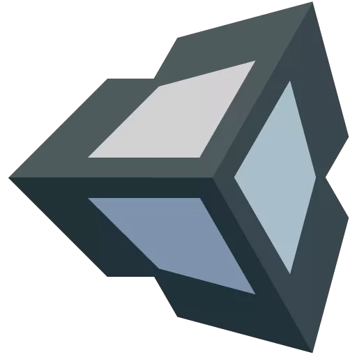
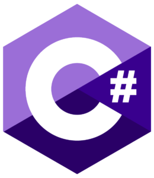
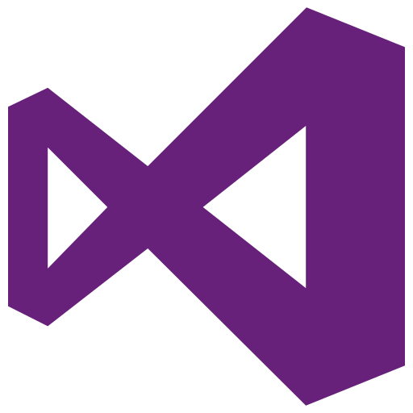

About Me
Welcome to my portfolio! I am currently a student at the University of Central Florida, pursuing a degree in Digital Media - Game Design with a focus on programming, and a minor in Computer Science. As I enter my fourth year, I am on track to graduate in May 2026. This portfolio highlights my coursework and personal projects, showcasing my expertise in coding as well as other facets of project development.
My passion for video games from a young age inspired me to major in Game Design, recognizing the unique potential of this medium. I strive to combine creativity and logistics in all my endeavors, and video games epitomize this perfect intersection. I am committed to being a valuable asset in every aspect of the development process and to any organization as a whole. Throughout my academic journey, I have actively sought out opportunities to gain diverse industry experiences, equipping myself with the skills necessary to excel in any task I undertake. I am confident in my ability to contribute meaningfully in any situation.
Skills
 HTML
HTML CSS
CSS Git
Git- Unreal
-  Unity
 C/C++
C/C++- Java
-  C#
 XML/JSON
XML/JSON
Software Knowledge
- GitHub
Proficient in using GitHub for version control and collaboration with 2 years of experience and formal education in a classroom setting.
-  Microsoft Visual Studio
Proficient in using Visual Studio for developing applications in various programming languages with 4 years of experience.
 Microsoft Visual Studio Code
Microsoft Visual Studio Code
Experienced in using Visual Studio Code for developing programs with 4 years of experience as my primary IDE.
- Microsoft Office
Proficient in Word, Excel, PowerPoint, and Outlook with over 10 years of experience.
- Adobe Creative Suite
Experienced with Photoshop and Premiere Pro with 3 years of experience.
- Maya
Skilled in 3D modeling and texturing with formal experience in a classroom setting.
Soft Skills
- Problem-Solving
- Teamwork
- Communication
- Time Management
- Adaptability
- Critical Thinking
- Leadership
- Creativity
Featured Projects
Super Bionic Bash International Game Jam

It was such an incredible honor to participate in Limbitless Solutions' Super Bionic Bash International Game Jam with the University of Skövde! My Minigame, "Bysen Says", contains my own original music and multiple systems I coded and helped to code. this game will be polished and incorporated into the Super Bionic Bash video game.
Learn MoreInk.exe

"Ink.exe" is a 2D wave-based hack and slash game with level progression. This game was made with a smaller team of coders to showcase a use of XML/JSON, C# object functionality, and creativity.
Learn MoreCreature Circus/Carnival

"Creture Circus" is a 3D Platformer with three level made by a team of 9 people within a short window. This showcases my ability to lead and direct a large team while contributing significantly to the project.
Learn More